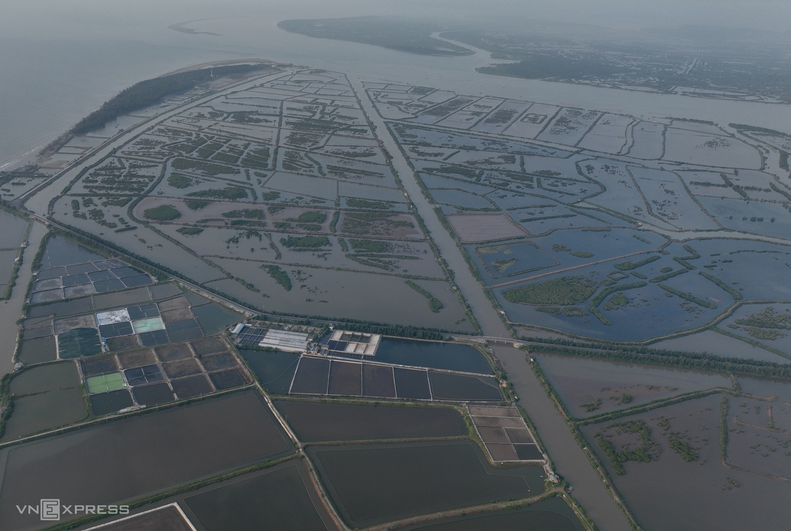

Hơn 12.500 ha Khu bảo tồn thiên nhiên đất ngập nước Tiền Hải trên thực tế chỉ có 900 ha đất có rừng, phần lớn còn lại là bãi bồi, mặt nước, theo Sở Nông nghiệp và Phát triển nông thôn tỉnh Thái Bình.
Khu rừng đặc dụng tại ba xã Nam Hưng, Nam Thịnh, Nam Phú (tả ngạn cửa Ba Lạt) được tỉnh Thái Bình thành lập năm 2014 theo Quyết định 2159 với tên gọi Khu bảo tồn thiên nhiên đất ngập nước Tiền Hải. Rừng ngập mặn nơi đây phân tán, chỉ tập trung ở một số khu vực nhất định. Tháng 4/2023, tỉnh Thái Bình ban hành quyết định xác định diện tích rừng đặc dụng còn 1.320 ha. Tuy nhiên, ông Đinh Vĩnh Thuỵ, Giám đốc Sở Nông nghiệp và Phát triển nông thôn tỉnh Thái Bình cho biết trên thực tế diện tích rừng đặc dụng chỉ còn hơn 900 ha do ảnh hưởng của biến đổi khí hậu. vị trí rừng ngập mặn dày đặc gần 400 ha ở xã Nam Thịnh và hơn 500 ha ở hai xã Nam Phú, Nam Hưng theo quy hoạch sẽ được giữ lại. Tháng 4/2023, tỉnh Thái Bình ban hành văn bản xác định ranh giới Khu bảo tồn thiên nhiên Tiền Hải, theo đó, diện tích mới chỉ còn 1.320 ha so với 12.500 ha trong quy hoạch trước đó của chính tỉnh này. Phần diện tích chuyển đổi sẽ được xây dựng thành khu đô thị, du lịch, nghỉ dưỡng, sân golf Cồn Vành - Cồn Thủ.
vị trí rừng ngập mặn dày đặc gần 400 ha ở xã NamNhiệt độ hôm nay : 32oC Log 1020 Bà Nguyễn Phương Anh

| Name | Telephone | Age |
|---|---|---|
| Dao Xuan Tien | 0828882866 | 18 |